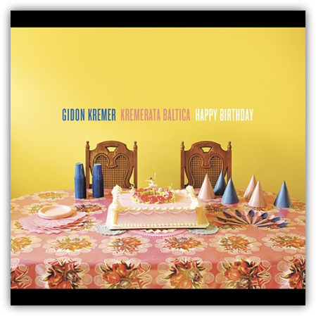
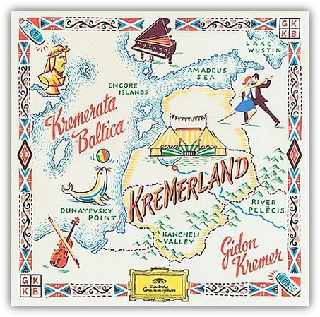

本来昨天有一场马友友和BSO在Tanglewood的演出，德沃夏克的大协和《自新大陆》。虽然票早已经卖光，还是暗自打了很久主意要去试试看蹭黄牛——或者实在不行就买草坪的票好了。可是真到了昨天下午，也许是天气太热太阳太毒，也许是自己有点困，也许是忽然又觉得路途太远……总而言之，言而总之，没有去。
可是总得做点什么来补偿自己对BSO的德九的向往。于是决定去淘碟。
波士顿的这一家CD店是Vic介绍给我的。本来完全没想过要问他CD店的事情，——在洛杉矶久了，以为全美国都一样没文化，不存在可爱的CD小店这种珍稀事物。Vic说要顺便去买几张碟，也就糊里糊涂的跟去，真去了才知道新英格兰到底是新英格兰，不是南加州那种穷乡僻壤可以媲美的……
于是有时会惦记着跑来转转。这家店的铺面并不算大，但是种类还算是可观。那次和Vic一起一边聊一边挑，抱了一个卡拉扬的小盒装回去。其实也没怎么细看，因为想着以后来逛的机会还多的是。后来又来过一次，买了一套古尔德的莫扎特奏鸣曲——我承认这是个怪诞的选择——这一次呢？要不好好挑挑看？
于是在里面转来转去，东翻翻，西翻翻，反正外面日头正辣，躲在有空调的小店里也很逍遥。可是转了半个小时过去，两手空空，一张碟也没有挑到。
——不是因为东西不好，而是因为我其实什么也没有看进去，我只是在CD架子前面绕来绕去的走而已。
我发现我没法集中注意力去挑，这里看上一眼，那里看上一眼，好像看见了不少东西，可是仍然有无穷多张剩下的CD还没有被我看过，像是希尔伯特的旅馆一样。
（还有人记得这个比喻么？）
我想起在北京的时候去北三环边上的一家原盘店，我和巴赫坐在地上，把一摞一摞的CD搬过来，一张一张过手， 偶尔彼此交换一下意见。一个下午过去差不多能够遍历完所有CD，站起来伸伸懒腰付账，带着有限的几张收获找个地方去吃晚饭。——这方式听起来很愚蠢，其实简单有效，而且带来实实在在的安全感：没有遗漏，没有遗憾，我找到了自己想要的东西。也许不多，可是反正自己也不是有钱人，有的听就行了。
可是现在我不可能遍历这家CD店，纵然可能，我的钱和购买欲也不够……这不是一个披沙拣金的问题，而是一个从满墙都还看得过去的货色里选一两样的问题，于是我像站在一千垛草中间的驴子一样陷入无边的沮丧。如果我下决心只在某一个架子的某一层里挑选，这是可以实现的，可是这样我就会花了很长时间而其实一直没有走出巴赫的宗教音乐的圈子。如果我每个架子都随便翻几张做采样，这也是可以实现的，可是这样就回到了前面的问题：半个小时过去我仍然面对着这样一家CD店，里面的CD几乎每一张我都没有看过。
令人抓狂不是么。
而且，说实在的，从“看起来不错的”CD到“有冲动买”的CD之间，还有颇为不短的一段距离。古典音乐CD也许是唯一一种这样的商品，我们的购买欲如此强烈的依赖于我们对上面印的那些专有名词的熟悉程度。于是……
某张牛人演奏的不知名作品的CD。
——这作曲家是谁？算了。
某张不知名演奏家演奏的著名作品的CD。
——这演奏家是谁？算了。
某张不知名演奏家演奏的不知名作品的CD。
——Who cares？
某张牛人演奏的著名作品的CD。
——拜托，这曲子我都有一百个版本在手上了。
某张我有兴趣的牛人演奏的某个我特别有兴趣的著名作品的CD。
——好贵。
某张我有兴趣的牛人演奏的某个我特别有兴趣的著名作品的便宜CD。
——嗯，好吧，不过这张碟我是不是已经有盗版了？在Amazon买会不会更便宜？网上是不是能下到ape？等等，我好像已经下载过这一张的ape了……
这真是个艰难的世界。我们的内心永不满足，而为了抚慰它，我们所能做的事情又如此之少。
最终我买了两张Kremer的陌生作品。我听过Kremer在UCLA的现场，并不觉得格外出色，但是他的CD里我有好几张都很喜欢。Kremerata Baltica是他自己领导的乐团，这两张CD都是他们演奏的。至于作品，多数闻所未闻。
至于我买它们的原因，见过Kremerata Baltica的CD的人一定会心。和古典音乐CD半个世纪以来一成不变的样子相比，他们的CD封面……真的蛮特别的啊。



August 28th, 2007 06:33
能不能告诉我CD店的地址？
August 14th, 2007 06:33
August 6th, 2007 06:33
August 7th, 2007 06:33
August 6th, 2007 06:33
August 6th, 2007 06:33
August 6th, 2007 06:33
August 6th, 2007 06:33
August 6th, 2007 06:33
August 5th, 2007 15:28
逛CD店也有这么多话说，服了。。。
PS，第二张PP真可爱
August 9th, 2007 19:41
生活里遍是权衡。
August 9th, 2007 20:08
你的博客是自己的网站吗？
很独特啊
呵呵 我很喜欢
August 9th, 2007 22:06
hi there!
那篇关于长度的文章不错啊，还多搞笑的。
那个“左右测试”也很有趣
顺便问一句，我想把你的文章转到我们学校的论坛上，可否？
August 11th, 2007 06:15
很喜欢你的文章，收藏了:)
August 12th, 2007 02:31
在香港信昌淘碟也有这种感觉 已经不能算“淘”了 因为如果不是财力有限的话会都拿走再说 几乎没有一个挑选的过程 很奇怪 买到一张好碟的满足感正在慢慢取代听到好音乐的满足感 或者说后者来得迟很多
古典的听得少 只听些电影原声还有些ecm new series
August 11th, 2007 21:45
想说你的文章写得很好，真的希望能多看几篇，有更多的文章吗？？
August 11th, 2007 21:59
不知道说得对不对，你的文章里面有很多“我”字，看来你对内心世界更加的关注，这样对外界的敏感度就降低了哦，你与别人的交流会不会减少了呢？写很多文字的人往往也是轻微忧郁或者生活有压力的人，不过我看你的文字就会想说这个人还跟我挺像的，多少有完美主义倾向，知道很多也会下意识想很多的人，祝你快乐，多写好文章，我喜欢你的博客，以后会经常上来看的
August 11th, 2007 23:03
木遥，你的窗户真多！而且世界也真小，我是从另一个朋友的链接进来的。
August 11th, 2007 23:06
对了，我8月31号到9月3号会在波士顿。
August 12th, 2007 00:12
木遥你好
请问这个iTheme是怎样设置成功的呢？
August 12th, 2007 00:17
木遥你好
请问这个iTheme是怎样设置的呢？
在wp.com上面没有这个theme，我从N.Design下载后也用不了
能指点一下么？谢谢！
August 12th, 2007 11:43
我就是按照典型方式直接安装的啊。。。
August 12th, 2007 14:20
我也在波士顿，可否告诉我这家cd店的情况。有空我也去淘 :D
August 12th, 2007 19:03
google map查询boston Newbury Comics
August 12th, 2007 19:47
挑CD时
最内个的是忘歌明,而无法.
“我次..到底是内张呀…”
August 13th, 2007 23:54
哦 这样
可以问一下你是使用的wp2.0软件吧，然后有自己的host space,
而不是使用的wp.com上面的免费页面，是么？
谢谢你啦！
August 14th, 2007 09:16
对。
August 16th, 2007 08:55
写了很多“我”，其实有时候是为了把观点表述的更加精确：
这是我的个人见解。
习惯性的为自己的观点加上注释，应该是很谨慎的表现。
同类的人貌似就是这么容易分辨，你看他说话，
一眼就能看得明白他的认真和仔细，还有隐藏不住的完美主义倾向，
几句话几篇文章，就可以从众人中将其分辨出来——这个家伙跟我是一路的。
August 27th, 2007 04:06
我也在波士顿…可以公布下碟店的地址吗?实在是需要找回点北京的感觉.
August 27th, 2007 06:57
newbury comics
332 Newbury St, Boston, MA